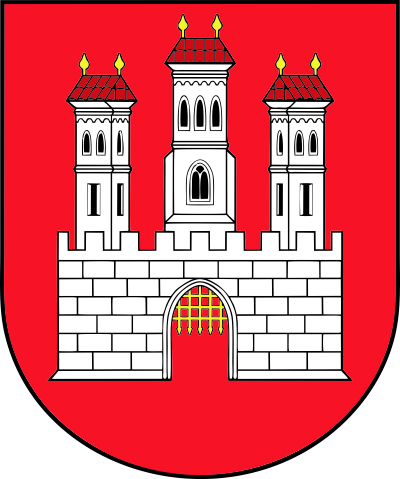
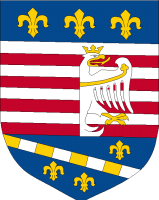
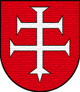
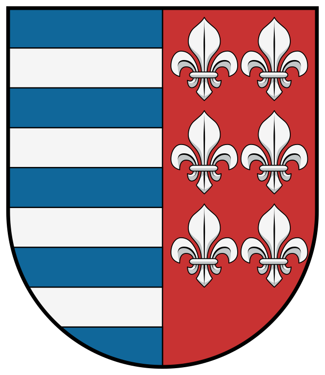

Zdroj: http://www.nizketatry.sk/mapy/slovensko/slovensko.html


Bratislava
Bratislava je hlavné mesto Slovenskej republiky a v súčasnosti patrí medzi najmladšie hlavné mestá Európy. Napriek tomu je to mesto s bohatou históriou slobodného kráľovského korunovačného mesta, v čase keď sa nazývala Prešporkom (Pozsony, Pressburg). Dnes je Bratislava dynamicky sa rozvíjajúcou metropolou, plnou mladých a šarmantných ľudí, ktorí jej vdychujú príjemnú neopakovateľnú atmosféru.
Kraj: Bratislavský
Obyvatelia: 425 923
Rozloha: 367 km²
Nadmorská výška: 217 mnm
Košice
Druhé najväčšie mesto Slovenskej republiky. Košice sú domovom najstaršieho maratónu v Európe, miestom s najväčšou pamiatkovou rezerváciou na Slovensku, s najväčším a najvýznamnejším zlatým pokladom v Európe, ale predovšetkým mestom, kde sa život žije a vychutnáva.
Kraj: Košický
Obyvatelia: 239 141
Rozloha: 243 km²
Nadmorská výška: 208 mnm
Zvolen
Zvolen je jedným z najstarších miest na Slovensku. Jeho územie, situované na sútoku riek Hrona a Slatiny, v juhozápadnej časti malebnej Zvolenskej kotliny bolo pre svoju výhodnú geografickú polohu i priaznivé prírodné podmienky osídlené už v praveku.
Kraj: Banskobystrický
Obyvatelia: 42 688
Rozloha: 98,73 km²
Nadmorská výška: 293 mnm
Brezno
Mesto Brezno leží vo východnej časti Horehronského podolia v priestrannej Breznianskej kotline vo výškach 498 - 545 m n. m. Kotlinová poloha mesta medzi Nízkymi Tatrami a Veporskými vrchmi Slovenského rudohoria umožnila vznik križovania komunikácií z Horehronia do Gemera, Liptova a dolného Pohronia. Kotlinu rozdeľuje rieka Hron na menšiu severnú a väčšiu južnú časť. Tieto časti sú rozrezané prítokmi Hrona.
Kraj: Banskobystrický
Obyvatelia: 21 148
Rozloha: 121 km²
Nadmorská výška: 504 mnm